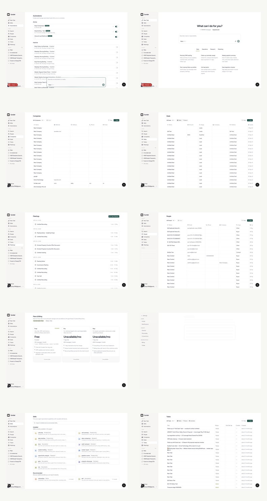
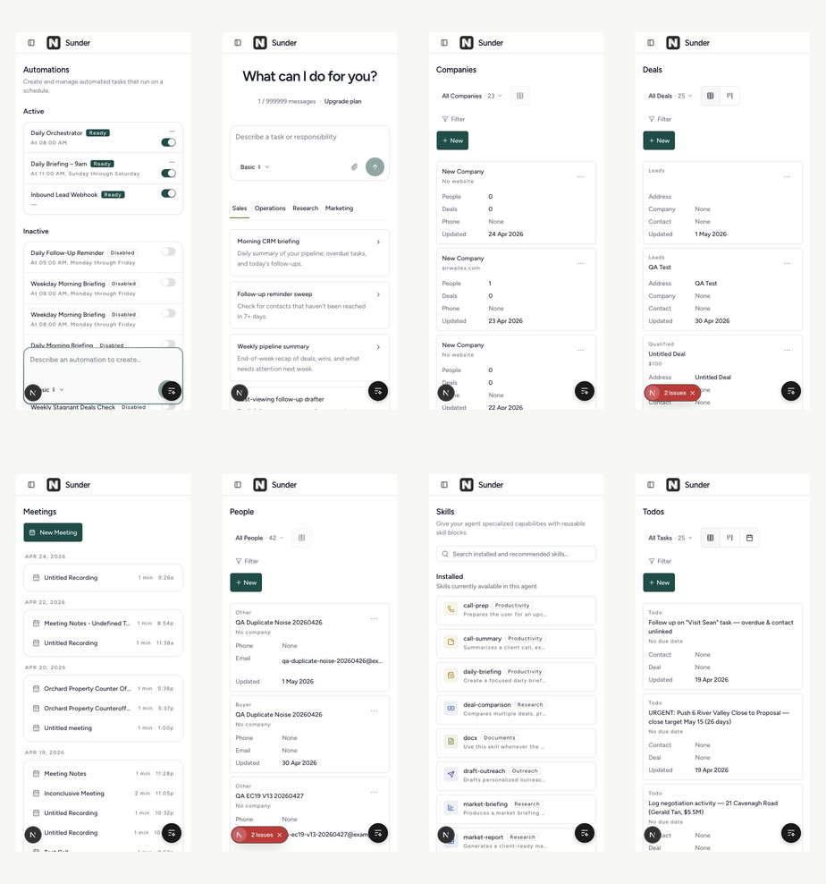

Production readiness review for the authenticated app surface
Audit date: June 11, 2026. Scope covered chat, CRM, tasks, automations, meetings,
skills, settings, and pricing at desktop and mobile widths using live browser
automation against localhost:3000.
Evidence


Top Findings
Debug and annotation chrome is visible in the product UI
The app shows non-product overlays: Agentation controls, a bottom-right black debug button, red issue badges, and the Next.js Dev Tools button. These are visible on multiple routes and instantly make the app feel like a development build.
Evidence: desktop-chat.png, desktop-automations.png,
mobile-automations.png. DOM snapshots include Open Next.js Dev Tools,
v3.0.2 Output Detail, and Block page interactions.
- Gate Agentation and annotation tooling behind a local-only env flag.
- Ensure Next dev tooling never appears in preview or production deploys.
- Remove visible issue markers from demo accounts unless the route is explicitly an internal QA route.
Demo account data contains QA noise and placeholder records
CRM screens expose records such as QA Duplicate Noise, QA Bot Two,
New Contact, New Company, Untitled Deal, and
Untitled Recording. This makes the product look uncurated and undermines trust.
Evidence: desktop-people.png, desktop-companies.png,
desktop-deals.png, desktop-meetings.png.
- Create a clean demo tenant with realistic advisory-sales data.
- Keep QA records in a separate test client or environment.
- Add a seed script for demo data so previews can be reset predictably.
Pricing and quota display fake or broken commercial values
Chat shows 1 / 999999 messages, while pricing says Free includes
100 messages / month. Paid plans show Unavailable/mo and disabled
buttons. This looks like a half-wired billing system.
Evidence: desktop-chat.png, desktop-pricing.png.
- Use real quota values everywhere or hide quota in demo mode.
- Replace
Unavailable/mowith real prices, a waitlist CTA, or remove paid tiers. - Make upgrade copy consistent with the user's actual billing status.
Desktop CRM tables create page-level horizontal overflow
People, Companies, and Deals exceed the viewport at 1440px. The table itself pushes the document wider than the screen instead of scrolling inside the table region. This matches the clipping issue seen in the supplied chat screenshot.
Measured overflow: People document width 1484px, Companies 1948px, Deals 1464px at a 1440px viewport.
- Contain CRM tables in an internal horizontal scroll region.
- Review default column widths and hide low-priority columns below large-desktop widths.
- Make table header, filters, and actions align to the contained table width.
Settings profile can look permanently empty
The settings route redirected to /settings/profile and showed a faint skeleton-like
card with no clear heading, error, or loaded content. In a production app, settings must never
feel like an abandoned loading state.
Evidence: desktop-settings.png.
- Add a clear page title and persistent section description.
- Use a deterministic empty, error, or loading state with retry affordance.
- Do not render ultra-low-contrast skeletons without visible framing context.
Console has global hydration and auth warnings
Browser logs repeatedly include a React hydration mismatch and Supabase warnings about using
getSession() user data. These are visible across routes and should not be ignored
before production.
Sample log: A tree hydrated but some attributes of the server rendered HTML didn't match....
Sample warning: Using the user object as returned from supabase.auth.getSession()....
- Find and remove client/server mismatched attributes, likely in injected dev tooling or mounted overlays.
- Use
supabase.auth.getUser()where server/auth trust is required. - Add console-error checks to smoke tests for core routes.
Mobile surfaces are functional but cramped by overlays
Mobile routes avoid document-level overflow, which is good. The issue is polish: debug overlays and issue badges sit over core controls and content cards. Automations is the clearest example, where the composer and floating controls visually collide with the list.
Evidence: mobile-automations.png, mobile-deals.png.
- Remove all non-product overlays from mobile.
- Reserve bottom safe areas for the app's own composer or action controls.
- Audit touch target spacing after overlays are gone.
The chat landing state feels like a demo, not an operational workbench
The app works end to end, but the empty chat route still reads like a generic AI assistant landing page. For Sunder, the first screen should make completed work and current responsibilities feel close: recent work, primary thread, daily orchestrator, due follow-ups, and approval queue.
Evidence: desktop-chat.png, mobile-chat.png.
- Keep the composer, but reduce hero scale on desktop and mobile.
- Replace broad prompt categories with user-specific operational suggestions.
- Show current automation status or pending approvals when present.
The design system is not documented in the repo root
PRODUCT.md exists and is useful. DESIGN.md is missing, so production polish
depends on scattered component conventions. That makes future work more likely to drift.
- Create
DESIGN.mdwith token usage, layout rules, table behavior, mobile patterns, and state patterns. - Document Flexoki semantic token usage and banned raw Tailwind palette classes.
- Add screenshot examples of approved app surfaces.
Route Matrix
Recommended Fix Order
| Order | Fix | Why first |
|---|---|---|
| 1 | Remove dev and annotation overlays from product routes. | Fastest visible win. Immediately stops the app from looking like a development build. |
| 2 | Replace QA data with a clean demo tenant. | The product cannot be credibly demoed while core lists show test data. |
| 3 | Fix pricing and quota display. | Commercial trust breaks when plan numbers are fake or unavailable. |
| 4 | Contain CRM desktop table overflow. | Prevents clipping and sideways page scroll on the most important operational surfaces. |
| 5 | Resolve hydration and Supabase auth warnings. | Console errors make production debugging harder and hide real regressions. |
| 6 | Harden settings loading and empty states. | Settings should communicate control and reliability, not uncertainty. |
| 7 | Document the design system in DESIGN.md. |
Prevents the same polish drift from coming back route by route. |
Audit Notes
The installed agent-browser CLI was attempted but Chrome failed before writing a DevTools
endpoint. The audit continued through the in-app Browser automation attached to the real local app.
Source data is saved in browser-audit-results.json.